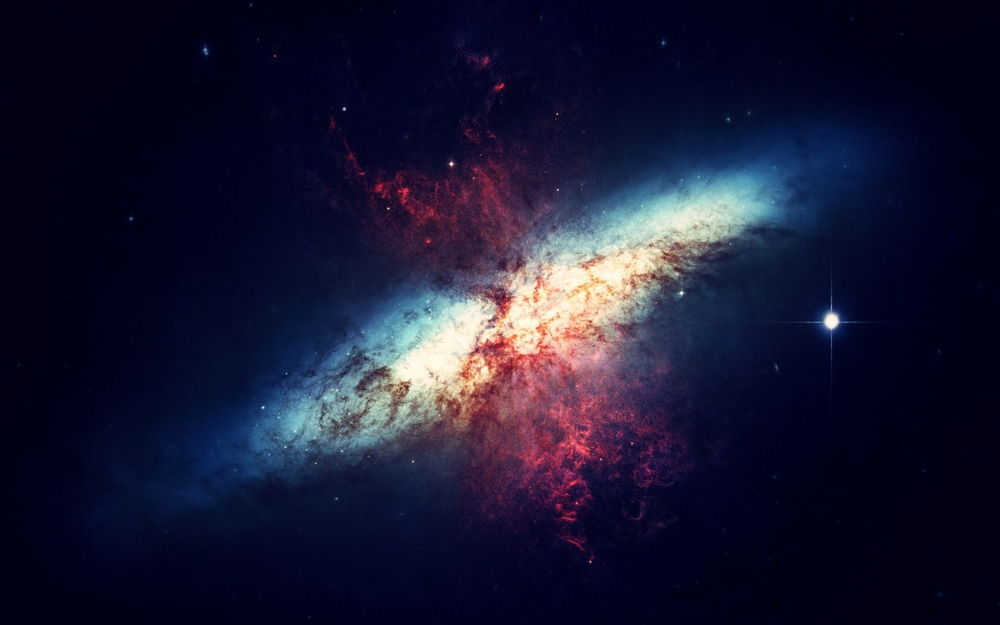
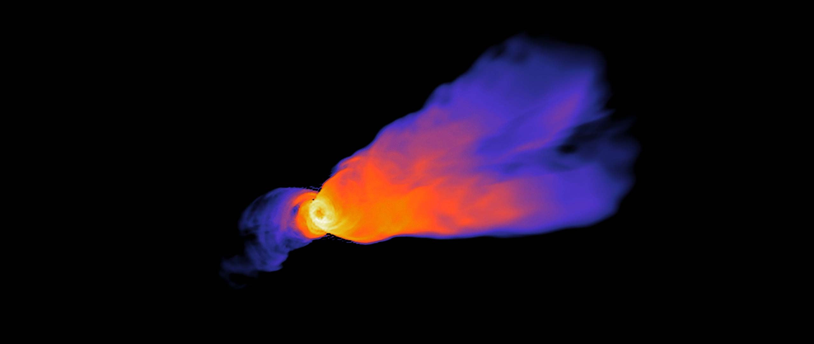

Summary
-

We have been studying about the properties of an astrophysical jet. It is just a tip of an ice-berg that was covered. Extensive study has been going over all over the world now-a-days, as scientist believe the energy emitted from astrophysical jet is an ideal scourse of energy. Even, experimental studies are being held to support the statement. The topic covered the following,
(i) The physical properties of Astrophysical Jets
(ii) Various sources of jets being observed
(iii) Some theoretical equations to secong the phenomena observed in the jets, and held the help of magento-hydrodynamics.
(iv) The Experimental evidences observed in M-87 and comparison of its collimation with respect to theory.
-

Future Research
There are several objectives related to astrophysical jets for which a conclusive explaination has not been provided so far.
(i) The process of formation ans launch
(ii)The collimation and acceleration
(iii) The propogation , structure and stability
(iv) The contents, the driving sourceThere are many things to discover as well. The rotation of the jets are a difficult quantity to measure with the help of line emission. At the same time, the magnetic field's origin configuration and amplification is also very unclear. The source of non-thermal emission is another significant problem in the comprehension of astrophysical jets. Only the integral properties of plasma, such as the total number density of particles, their mean energy, and the magnetic field intensity, are provided by the fluid description used in cutting-edge investigations. This is insufficient for the emission calculations, which call for the non-thermal component's energy-momentum distribution. We must therefore go beyond the fluid description in order to address the jet emission.
The computer simulations of jets as a field of study are now moving into a more developed stage. As the technology advances, complex equations might be solved in large computers which might be able to give us a simulate various aspect of astrophysical jets in future.